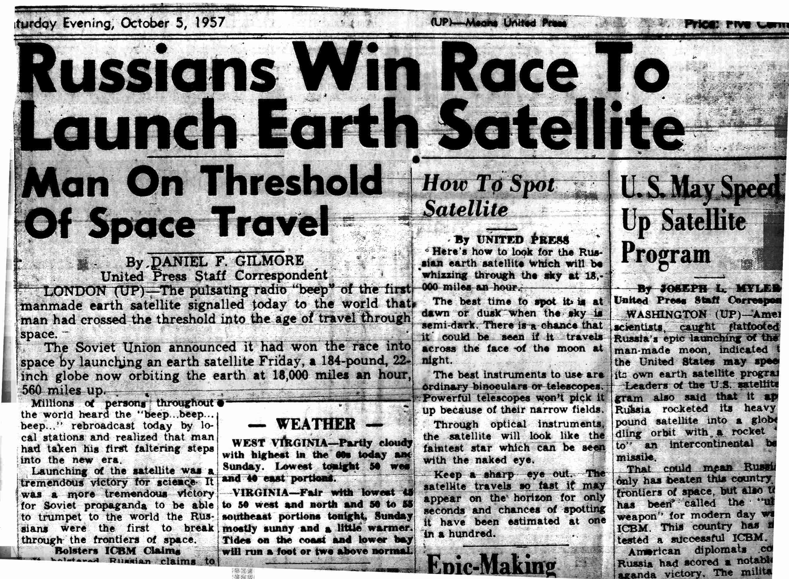

"Should have been a cowboy" "I bet you've never heard ol' Marshal Dillon say Miss Kitty, have you ever thought of runnin' away? Settlin' down, would you marry me If I asked you twice and begged you, pretty please? She'd have said, "Yes", in a New York minute They never tied the knot, his heart wasn't in it He just stole a kiss as he rode away He never hung his hat up at Kitty's place I should've been a cowboy I should've learned to rope and ride Wearin' my six-shooter, ridin' my pony on a cattle drive Stealin' the young girls' hearts Just like Gene and Roy Singin' those campfire songs Woah, I should've been a cowboy!"

Sputnik the first artificial satellite launched into space.


ARPA - (Advanced Research Project Agency) later DARPA (defense)

“The Internet as we know it really got started in the early 1960s. That was when J.C.R. Licklider — a computer scientist with technology company Bolt,
Beranek and Newman (BBN) — formulated a few unique ideas about global networking in a series of memos, describing an "Intergalactic Computer Network."
His idea: link computers together across the globe; and anybody near a computer could share information. As it turns out, Licklider had the right idea at the right
time. The Cold War had the United States searching for a communication network that
could survive a nuclear attack.”
Quote taken from livescience.com

Tim Berners-Lee developed the first HTML (Hypertext Markup Language) in 1989

(Published text has always been marked up so that the author and publisher would be to synchronize and layout a publication the way it has been envisioned. TBL created a markup language that tells a web browser how to visually display a page the way the "author" envisoned it)

Marc Andereessen added an image tag to HTML and founded Netscape - 1993

During the 90's there were browser wars and HTML was becoming fragmented. TBL created w3c.
(https://www.w3.org/) to maintain HTML standards.
w3.org to maintain HTML standards.

Versions
- 3.2 -1997
- HTML 4.01 - 1999
- XHTML - 2000
- HTML5 - 2014

There have been many versions of HTML. We are currently in version HTML5 and many people don't see a sixth one coming any time soon, if ever.